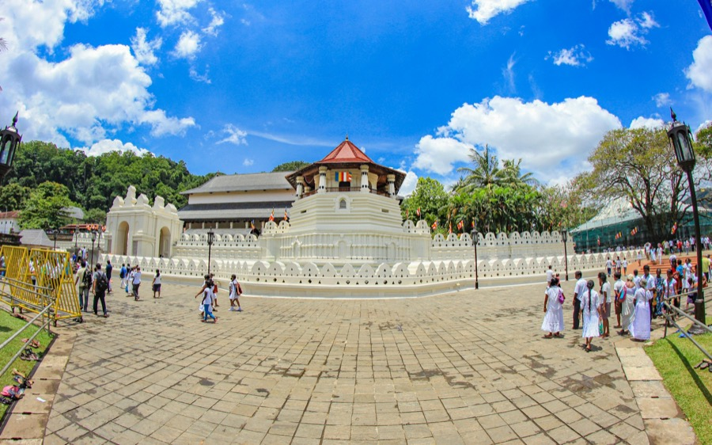

1Temple of the Sacred Tooth Relic
Sri Dalada Maligawa keeps Sri Lanka’s most precious relic, a tooth of the Buddha, in a golden casket behind the doors of an inner chamber. It’s a working temple first: pilgrims dressed in white, and drums at the services. One ticket also covers three museums and the royal elephant stable in the same grounds.
From townIn the centre, on the lake’s north shore
Open5:30 AM–8 PM daily · services at 5:30, 9:30 & 6:30 PM
Give it1–1.5 hours
EffortEasy
TicketRs 3,000 non-SAARC · Rs 2,500 SAARC · from the machines only
From our driversCome for the 6:30 PM service: drums, oil lamps, and the chamber doors open — you see the golden casket, not the tooth itself. Go at 5:30 AM if you want it quiet. Buy only from the ticket machines; anyone selling a ‘special ticket’ to see the relic is running a scam. The audio guide is free, in 8 languages.
Evening at the temple with Ceylon HopFrom your hotel to the 6:30 service, and back afterAsk for a price →